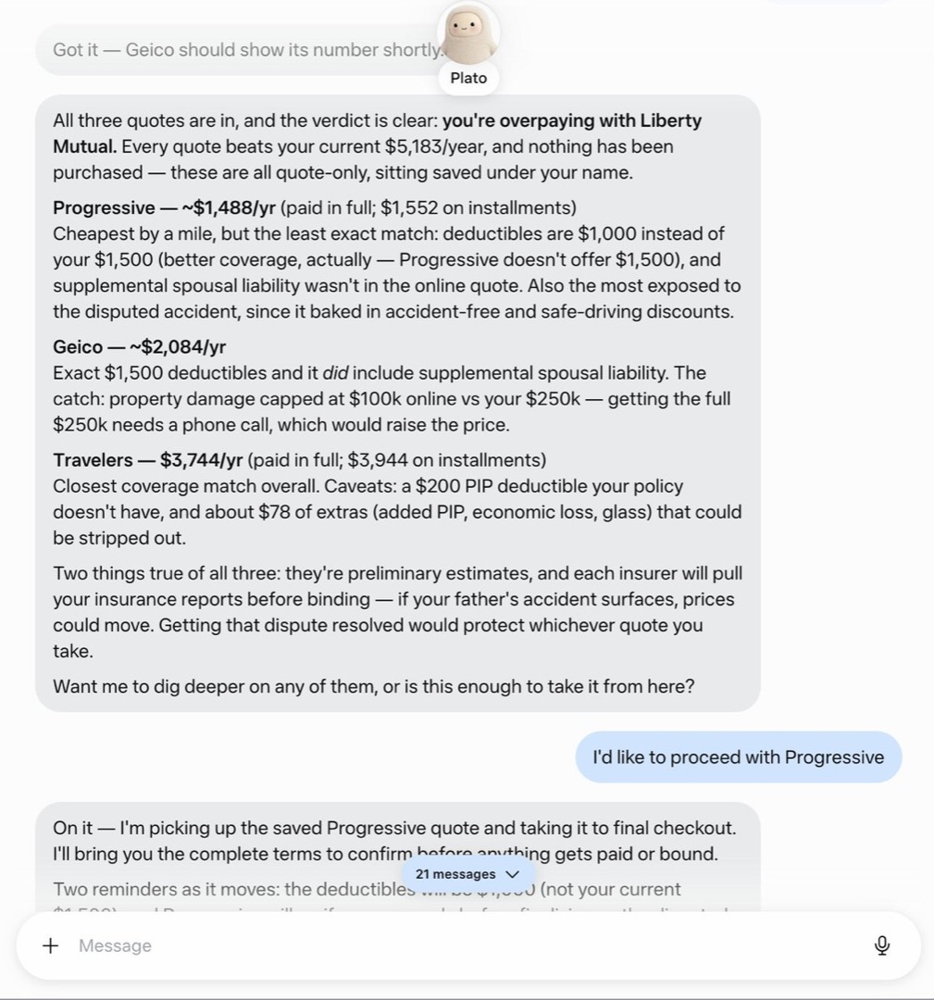
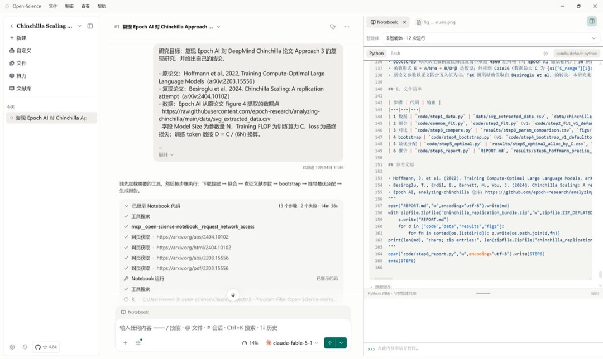
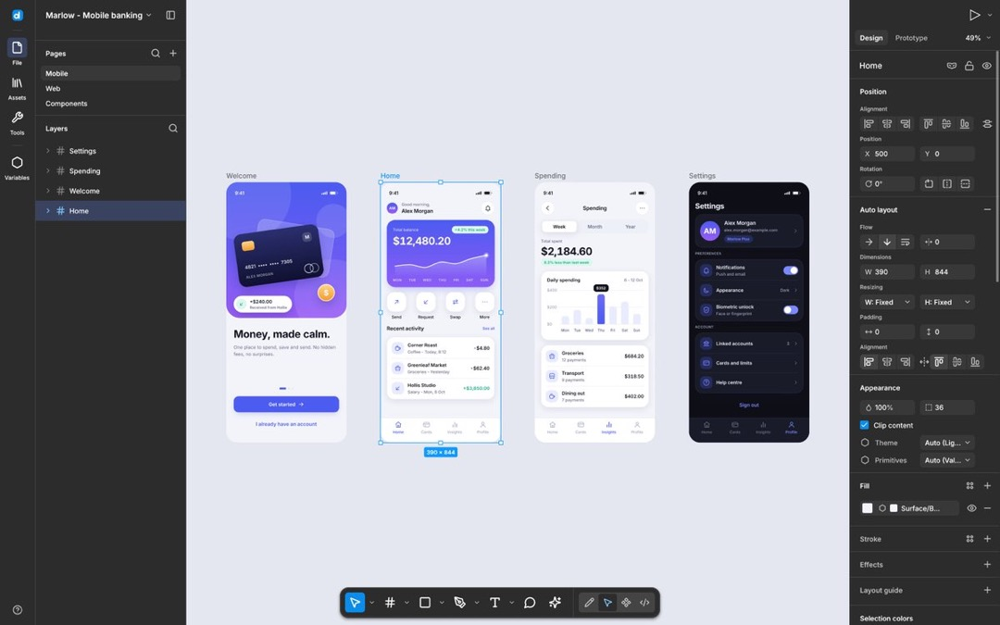

本期速览
03 AIPOCH 开源Agent科研工作台
04 Desigma读.fig的原生设计工具
06 Claude Code九成代码由AI生成
07 Qwen-Image-2.1直出透明背景
08 DeepSeek-Flash实测查资料纠错
01｜MetaMuse 代买保险省3500美元
来源（X） · @orangercat · 2026-10-17 21:31
中文译文
Joe Devoy 把他的汽车保险保单交给了 Meta Muse，要求在相同保障范围下找到更便宜的费率。他说大约五分钟后，它就找到了一个每年能帮他省下 3,500 美元的保单，然后购买了新保单并取消了旧保单。
他曾多次尝试更换保险公司但都放弃了，因为保险网站和比价门户网站实在太难用了。保障范围匹配和节省金额都是他本人的说法，帖子中没有展示报价单。
比较保单是最简单的部分。购买新保单和取消旧保单才是信任和责任所在，所以这一步才是真正值得关注的。
https://x.com/JosephDevoy/status/2098158828135002245
https://muse2.ai/observations/
原文
Joe Devoy gave Meta Muse his auto insurance policy and asked for a better rate with identical coverage. He says that in about five minutes it found a policy saving him $3,500 a year, bought it, and canceled the old one.
He had abandoned several attempts to switch because insurance sites and aggregator portals were so painful. The coverage match and the savings are his own account, and the post doesn't show the quotes.
The comparison is the easy part. Buying the new policy and canceling the old one is where trust and liability sit, so that's the step to watch.
https://x.com/JosephDevoy/status/2098158828135002245
https://muse2.ai/observations/
引用内容
Joe Devoy @JosephDevoy
中文译文
昨天我把我的汽车保险保单上传到了 Meta @Muse，要求在相同保障范围下找到更便宜的费率。大约 5 分钟后，它找到了一个每年能帮我省下 3,500 美元的保单，帮我购买了新保单，并取消了我的旧保单。
我一直知道自己多付了钱。我曾多次尝试更换保险公司但都放弃了，因为保险网站和比价门户网站实在太难用了。
当一个智能体可以在五分钟内完成全部工作，为什么还要自己填表、比较报价、应对销售电话呢？杀手级产品。
原文
Yesterday I uploaded my auto insurance policy to Meta @Muse and asked for a better rate with identical coverage. In ~5 minutes, it found a policy saving me $3,500 /year, bought it, and canceled my old one.
I knew I was overpaying. I’d abandoned several attempts to switch because insurance websites and aggregator portals are so painful.
Why fill out forms, compare quotes, and field sales calls when an agent can finish the entire job in five minutes? Killer product.

02｜Hugo人形陪伴机器人搭载VLE模型
来源（X） · @alacheng · 2026-10-17 22:51
引用内容
theermann @theermann
中文译文
介绍 Hugo：首个人类陪伴机器人。
在 Boston Dynamics，我担任首席战略官，负责将机器人带入现实世界。
我的联合创始人 Farbod Farshidian 曾在 RAI Institute 领导研究工作。
我们一起花了 15 年以上的时间教会机器人奔跑、跳跃和工作。
于是我们思考：如果机器人能够与人建立情感连接会怎样？
Hugo 运行在首个视觉-语言-表情（VLE）模型之上。
它将所看到的和所听到的与动作、表情和手势联系起来。
它会注意到你，读懂氛围，并实时做出反应。
而这仅仅是第一个。
Dynamic Creatures 是 @Boston Dynamics 的官方娱乐与接待合作伙伴。
我们正在与电影制片厂、度假村和主题公园合作，打造一个角色阵容。
http://dynamiccreatures.com
原文
Introducing Hugo: the first human companion robot.
At Boston Dynamics, I was Chief Strategy Officer, bringing robots into the real world.
My co-founder, Farbod Farshidian, led research at the RAI Institute.
Together, 15+ years teaching robots to run, jump, and work.
So we asked: what if robots could connect with people?
Hugo runs on the first Vision-Language-Expression (VLE) model.
He links what he sees and hears to movement, expression, and gesture.
He notices you, reads the room, and reacts in real time.
And he's only the first.
Dynamic Creatures is @BostonDynamics' official entertainment and hospitality partner.
We're building a cast of characters with film studios, resorts, and theme parks.
http://dynamiccreatures.com
03｜AIPOCH 开源Agent科研工作台
来源（X） · @Xudong07452910 · 2026-10-17 13:25
这次 Vibe Research 了一把：我出想法、看代码、点批准，剩下的交给 Agent。
跑完还导出了一个 .science包。以后再有人问你这结果怎么来的，直接把包甩过去 😂
引用内容
Xudong Han @Xudong07452910
简单说，就是让 Agent 参与真实科研流程：读数据、跑 Python/R、分析结果，同时把代码、文件和研究过程都保留下来。
我接上 Claude Fable 5.1，拿它复现了一个 AI 圈挺有名的研究：Epoch AI 对 Chinchilla scaling law 的复现。
用的是 Epoch 从论文配图里提取的 245 个公开数据点，按原论文的方法重新拟合，再和两篇论文的结果对比。
Agent 会自己查原论文、写代码拟合、算置信区间、生成图表和报告。拟合出的参数和 Epoch 论文基本一致，中途它还自己发现 scipy 默认的收敛容差会让置信区间偏窄，换了严格容差重跑。
但我更感兴趣的是它的 「.science」。
研究做完后，可以把会话、文件、Notebook 运行记录和验证信息一起打包。
官网放了不少 「.science」 的例子，大家可以参考 ↓
https://aipoch.com/open-science/use-cases
我实际导出再导入了一遍，比较直观的感受是：别人拿到的不只是最后几张图，还能顺着记录往回看，这个结果到底是怎么跑出来的。想接着做也能直接建副本，我就在副本里换成 MSE 又跑了一轮。
Epoch 当初要从论文配图里一个个抠数据点，缺的就是这样一份过程记录。
这其实挺接近我理解的「Vibe Research」。
让有研究想法的人更容易把想法真正跑起来，同时研究过程也更容易被检查、分享和复现。
如果这套方式继续成熟，科研的门槛确实还会再往下降一些。
Science, open to all.
AIPOCH Open-Science ↓
https://github.com/aipoch/open-science

04｜Desigma读.fig的原生设计工具
来源（X） · @QingQ77 · 2026-10-17 23:11
https://github.com/deepfounder-ai/desigma
一款 Rust 原生桌面 UI 设计工具，提供框架、自动布局、组件与变体、原型连线、矢量编辑等功能，并支持导入 .fig 离线文件（kiwi 容器、deflate/zstd 压缩格式）与 Figma REST API JSON。

05｜Bifrost在K8s弹性扩缩LLM网关
来源（X） · @K8sArchitect · 2026-10-17 23:06
中文译文
本教程展示了如何使用 Helm 在 Kubernetes 上运行 Bifrost（一个开源 AI 网关），配置集群模式和自动扩缩容，使数千个 LLM 请求在高负载下依然保持快速响应
➤ https://ku.bz/Rss1qf4Sj
原文
This tutorial shows how to run Bifrost, an open-source AI gateway, on Kubernetes with Helm, cluster mode and autoscaling so thousands of LLM requests stay fast under load
➤ https://ku.bz/Rss1qf4Sj
06｜Claude Code九成代码由AI生成
来源（X） · @Gorden_Sun · 2026-10-17 23:02
代码都由AI写了之后，人类做什么？
1、我们到底该不该做这个功能？（把握方向、产品品味与边界）
2、把关高危代码（计费、自动更新器、CI 流程等）
3、架构设计（确立团队其他人未来会效仿的代码范式）
4、审阅“证据”而非代码本身（看测试输出、运行命令与返回结果、UI 截图、AI 审查摘要）
5、为最终结果兜底（“You land it, you own it”，无论代码是谁敲的，发起指令的人类必须对线上结果负责）
引用内容
ClaudeDevs @ClaudeDevs
中文译文
Claude 编写了 Claude Code 约 90% 的代码。
从六月到九月，合并的 PR 数量翻了一倍多，而被回滚的代码比例下降了超过 40%。
我们写了关于我们如何改变代码审查流程来实现这一目标的文章，以及如何在团队中采用：
https://claude.dev/blog/solving-code-review-at-anthropic/
原文
Claude writes about 90% of Claude Code's code.
From June to September, merged PRs more than doubled while the share reverted fell by more than 40%.
We wrote about how we changed code review to get there, and how to adopt it:
https://claude.dev/blog/solving-code-review-at-anthropic/
07｜Qwen-Image-2.1直出透明背景
来源（X） · @Ryrenz · 2026-10-17 22:40
上个月放出权重，GitHub 上已经 1956 star，HuggingFace 和 ModelScope 都能下，视觉生成部分 7B 参数。
做图的人最烦的环节之一就是抠背景：模型出的是一张平面图，想把主体单独拿出来放进别的画面，得再过一遍抠图工具，边缘毛糙还要手修。Qwen-Image-2.1 原生就能出 RGBA 透明图，还能编辑透明图层、直接从照片里把主体提出来，省掉的是这一整道工序。
改图这块它也放得很开：一次最多塞十张参考图，想改哪块就在图上画个圈、随手涂一笔或者给个掩码，人物和产品的样貌特征能保住，不会改两下就换了张脸。原生支持 2K 分辨率，排版、肖像光照和细节质感也都比上一版强。十月九日又出了个 Turbo 版，八步去噪就能出图和改图，阿里云 Model Studio 上的 API 同时开了。
生态跟得也快，Diffusers、ComfyUI、vLLM-Omni、SGLang、LightX2V 和 Intel OpenVINO 都在发布当天就原生支持。要注意它用的是 Qwen Research License，商用前先看一眼条款。
抠图这活儿，可能真要退场了。
GitHub：https://github.com/QwenLM/Qwen-Image-2.1
08｜DeepSeek-Flash实测查资料纠错
来源（X） · @yanhua1010 · 2026-10-17 22:38
写画面代码它还是不太行，专利图那段最后是 Opus 5.5重写的。
但查资料和挑错是真的猛：我让它查雨刮器是谁发明的，9 分钟搜了 50 次，翻出一个 1898 年的老专利，网上都说的“雨刮器是 1903 年一个叫 Mary Anderson 的美国女人发明的”其实不对。
整期下来它这部分花了不到 5 块半，以后查资料、挑错这种活，我就直接扔给它了。
引用内容
Yanhua @yanhua1010
DeepSeek 刚放出最新 flash 模型 V4.1-Flash-1017，Benchmark 上几个 agent 编程榜直接把 Opus 5 吊打；做一道题大约 0.2 美金，而且还是 MIT 开源。
更狠的是它把自家的搜索和网页抓取 API 一起开放了，在 Claude Code 和 Codex 里调用，11 月 1 号前免费。
以前我们玩 agent 得付三份钱：贵的闭源模型、搜索服务、抓网页的服务。现在 DeepSeek 一家全包了，还便宜。
这下周末有的玩了。